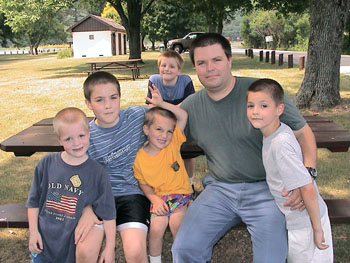
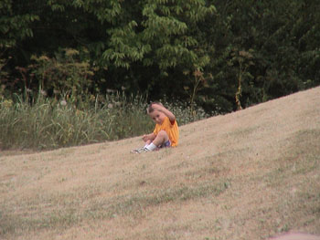
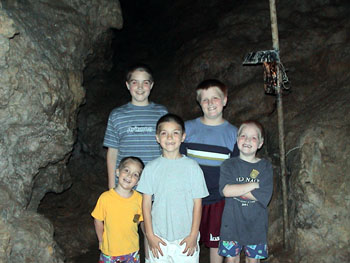
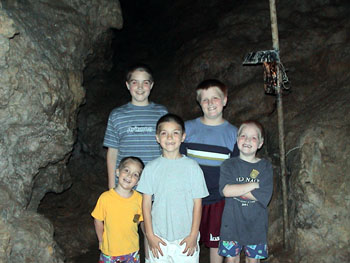
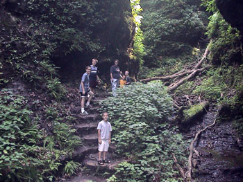
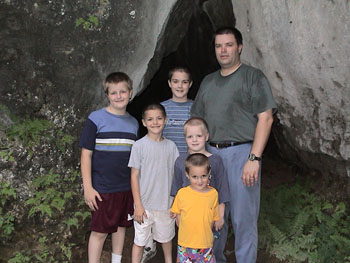
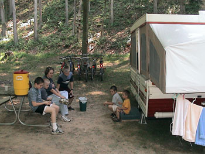

 In July, my company had an important deadline to meet which required some late nights by all. Having met our deadline, the bosses decided to give us some extra days off around the 4th of July. This was our perfect opportunity to escape for more than just a weekend. Because of the heat (95 degrees, 95% humidity) I looked around for campsites to the north. We had the extra days, so we thought we might get into northern Michigan. However, all the campsites I could find were booked for the holiday weekend, and the weather forecast was not any different for them either. So I turned to searching our own state.
 We stopped at Wendy's for a frosty and then headed back to our campsite for a peacful nights sleep.
 Before leaving town, we stopped at the local Sack 'N Save to get some lunch. Having 5 boys means that we do not often go to restaurants to eat.
You can image what the bill would be for a party of 7. So one of our favorite things to do is to cruise the local grocery store and get things
for a picnic. It's best when the deli has a pre-made 12-24 inch sub. We struck out this time, but we gathered some buns, luchmeat, potato
salad, etc. and headed to the park for a pic-nic. After a tasty lunch, we made our way to Seip Mound.
Before leaving town, we stopped at the local Sack 'N Save to get some lunch. Having 5 boys means that we do not often go to restaurants to eat.
You can image what the bill would be for a party of 7. So one of our favorite things to do is to cruise the local grocery store and get things
for a picnic. It's best when the deli has a pre-made 12-24 inch sub. We struck out this time, but we gathered some buns, luchmeat, potato
salad, etc. and headed to the park for a pic-nic. After a tasty lunch, we made our way to Seip Mound.
Seip Mound is located behind a rest area on highway 50, southwest of Chillicothe. In fact if you were not specifically looking for it, you would never find it. Also, the rest area is rather primitive (pit toilets) so you wouldn't necessarily want to stop there anyway. We found the mound, took a few pictures, and decided to take in the local tourist trap, 7 Caves. After all, it was mid afternoon, the fireworks was still six plus hours away, and we had nothing better to do.
 
At 7 caves we found a beautiful trail through the trees, in and around the caves, and along the rivers and streams. All
in all, I would guess there are about 2 miles of trails. The trails were sometimes steep and there were many staircases along
the way. The tour is a self guided one and is clearly labeled. Inside the caves are lighted signs pointing out various designs
and features. There are buttons on the signs that if pressed, light up the features mentioned on the signs. The boys enjoyed
pressing the buttons and lighting the caves. I enjoyed the cool temperatures in the caves as the day was very warm and moist
for so early in July.

At 7 caves we found a beautiful trail through the trees, in and around the caves, and along the rivers and streams. All
in all, I would guess there are about 2 miles of trails. The trails were sometimes steep and there were many staircases along
the way. The tour is a self guided one and is clearly labeled. Inside the caves are lighted signs pointing out various designs
and features. There are buttons on the signs that if pressed, light up the features mentioned on the signs. The boys enjoyed
pressing the buttons and lighting the caves. I enjoyed the cool temperatures in the caves as the day was very warm and moist
for so early in July.
 After our stroll through 7 caves we headed back toward Chillicothe to await the fireworks. On our way into town, our eyes were drawn to the Domino's Pizza sign advertising 3 large pizzas topped anyway you want for $19.99. We couldn't believe the price, so we stopped to inquire (who say's advertising doesn't work). The deal was a real one and we ordered our pizzas. Some of you might be thinking, but Domino's doesn't have a dinning room. Well, you're right. But you remember, we enjoy eating at the park. So with pizzas in hand, and some soda pop from the Kroger next door, we headed to the park.
 Tonight the park was crowded. We were begining to see that Chillicothe means business when they put on a fireworks display. They had a stage setup for live music on one side of the park. On the opposite side of the park is a floodwall. It is from here that they set off the fireworks. The floodwall creates a natural grandstand for the spectaters.
The fireworks were spectacular. So much so, that I would consider making the trip again next year. Chillicothe should be proud. With the firworks over at about 11:00, we headed back to the camper with 5 very tired boys. As we passed one of the banks on the way out of town I noticed the temperature, 85 degrees. Here it was 11:30 at night, and it was still unbearably hot. I knew there wouldn't be much sleep tonight.
 By the time the whole family made it down to the resevoir (a small one at that), it was getting obvious that maybe Connor shouldn't try the trails without someone scoping them out first. So Marie and Connor headed back to the playground and the rest of us headed down the trail.
The trail was pretty easy going, but again it was still heading downhill and I had the extra weight of Ellery on the back. That made it real easy going down hill. After about a mile, the brush around the trail begain to thicken, and I decided it was best to turn back (If I didn't have Ellery on the back I would have gone farther). Ridingback really wasn't as bad as I feared.
We made it back to the resevoir and noticed the nice steep hill keeping the water in the resevoir. I thought it might be fun to ride down the hill, so I unstrapped Ellery and coasted down the hill. It was fun. The acceleration was fast. So Bradford, Donovan, Spencer, and I rode down the hill for a while. When we got tired of that we headed back to the campsite for lunch.
 After lunch we drove over to Old Man's Cave which is located in Hocking Hills State Park.
It is only about 20 miles from Tar Hollow. Old Man's Cave is not a cave in the sense that you go in a hole and find a room in the ground.
It is a large overhang that was carved by a stream. It is a very nice area and the park service has created some nice trails in the area.
There has been very little rain this summer, so the stream was shallow to non existent. In the "Upper Falls" area,
there wern't any falls.
After lunch we drove over to Old Man's Cave which is located in Hocking Hills State Park.
It is only about 20 miles from Tar Hollow. Old Man's Cave is not a cave in the sense that you go in a hole and find a room in the ground.
It is a large overhang that was carved by a stream. It is a very nice area and the park service has created some nice trails in the area.
There has been very little rain this summer, so the stream was shallow to non existent. In the "Upper Falls" area,
there wern't any falls.
At Old Man's Cave we learned about Rock House. So we headed on over. Where again, we found some beautiful trails through the woods. This time they lead to more of a cave like area called Rock House. I can't say enough about how beautiful that area of the state is. It is hilly, rocky, covered in trees, and just plain beautiful.
 After dinner we hung out at the camper. We were pretty tired after hiking all afternoon, so we played Uno and
Set, rode bikes, etc. until it was dark. And then we went to bed.
After dinner we hung out at the camper. We were pretty tired after hiking all afternoon, so we played Uno and
Set, rode bikes, etc. until it was dark. And then we went to bed.
 Saturday morning after breakfast we decided to check out the fire tower at the state park. Our camping neighbors had mentioned that they
had enjoyed climbing on it the previous day. We didn't really want to head home yet, so we set off for the fire tower. The road to the
tower was quite narrow. Having a large family, we also have a large van (it seats 15). It was not the greatest road for crusing on in
a large vehicle. But we made it to the tower and all climbed to the top. I can't find any pictures of it, so it must have been real interesting.
Saturday morning after breakfast we decided to check out the fire tower at the state park. Our camping neighbors had mentioned that they
had enjoyed climbing on it the previous day. We didn't really want to head home yet, so we set off for the fire tower. The road to the
tower was quite narrow. Having a large family, we also have a large van (it seats 15). It was not the greatest road for crusing on in
a large vehicle. But we made it to the tower and all climbed to the top. I can't find any pictures of it, so it must have been real interesting.
We made our way back to the camper and packed up and headed for home. We had a nice trip together and wanted to finish it off by eating at a restaurant. So we searched high a low for an appropriate place to eat. After driving the entire length of Columbus, we just couldn't find anything and went home. At home, we unpacked, showered, and went to a local Chinese Buffet for dinner.
View all photos for this trip.
{kind=link}
{kind=link}
{kind=link}
{kind=link}
{kind=link}
{kind=link}
{kind=link}